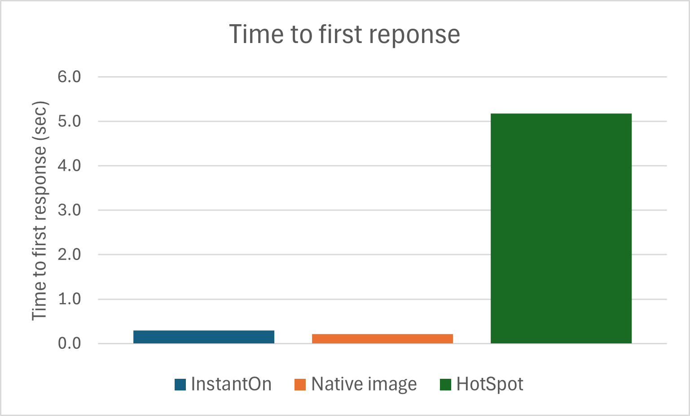
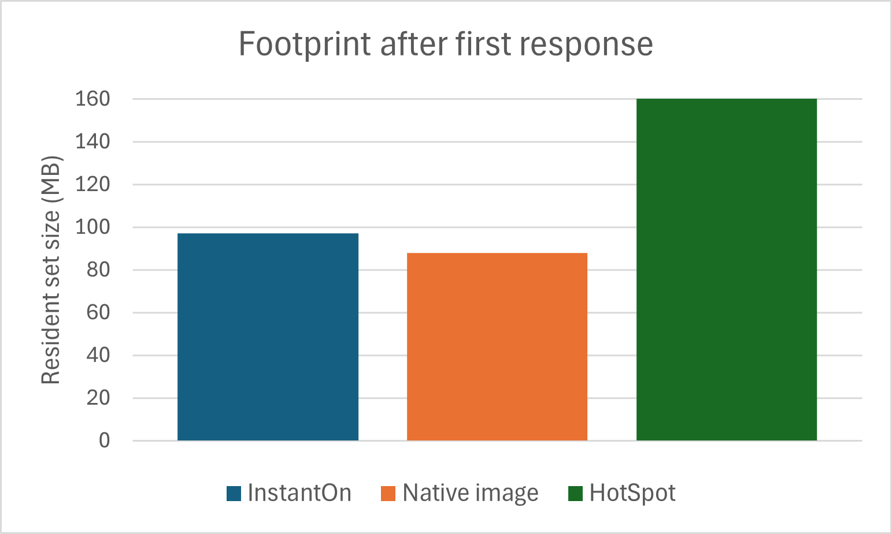
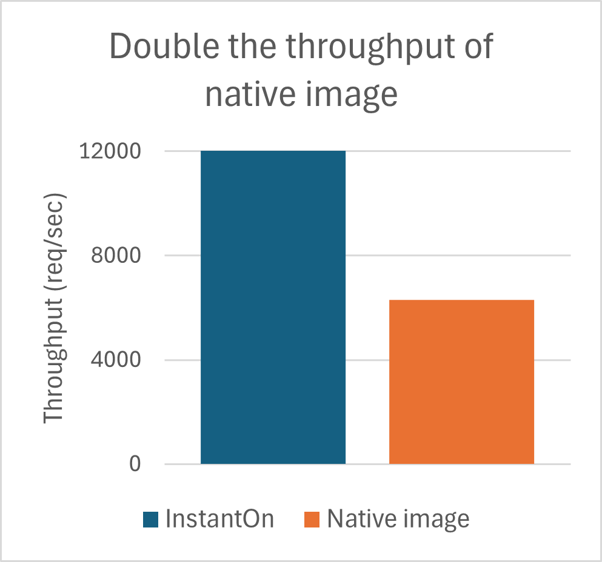
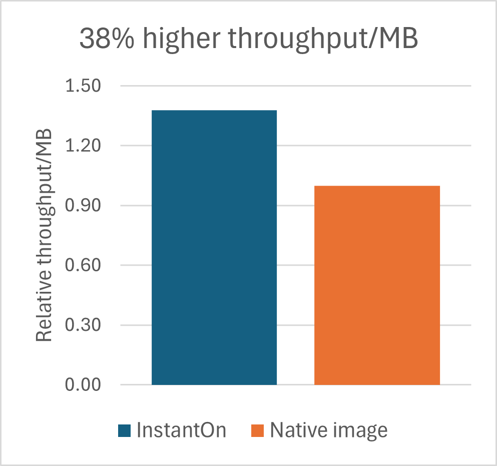

Quarkus is a Kubernetes-native Java framework optimized for cloud-native applications. Designed from the ground up for containerized environments, Quarkus supports both traditional Java Virtual Machine (JVM) execution and native image compilation through GraalVM. It offers fast startup times, low memory usage, and compact application sizes, making it an excellent choice for microservices and serverless workloads. In this article, we evaluate the performance of a containerized Quarkus-based application, namely RestCRUD, running in the following two modes:
Our experiments reveal the following key findings about InstantOn performance:
Since Quarkus is mostly used in a Kubernetes setting, we decided to look at performance metrics that are relevant for a cloud environment:
Time to first response: This metric represents the elapsed time from the moment the application process is started until the moment the response to a first query is received by the requester. This approach avoids the startup measuring pitfall that occurs when the Java framework eagerly asserts to be ready even though some needed activities are still happening in the background.
Memory footprint after first response: Physical memory consumption is measured immediately after the response to a first query is received. For this purpose, we use the following command:
ps -orss --no-headers -–pid JvmPid
Steady-state throughput: Steady-state throughput is defined as the number of transactions that are processed per second after the VM has fully warmed up.
Throughput per MB: While the VM is operating at steady-state, we record the (a) throughput and (b) physical memory used by the VM, and compute the ratio of the two values.
Since Quarkus is geared toward small and quick containers, we limited our containers to 1 CPU and 256 MB of memory.
In all our experiments, we set the maximum heap size to 128 MB by using -Xmx128m, while leaving the initial heap size unspecified.
Eclipse OpenJ9 InstantOn reduces the time to first response for the RestCRUD application to approximately 300 milliseconds. While this time is slightly slower than the Native Image, it is still over 94% faster than HotSpot. This rapid responsiveness is especially valuable in KNative environments, where applications are frequently scaled down to zero and must start quickly on demand. Crucially, InstantOn achieves this performance while maintaining full Java compatibility, unlike Native Image, which imposes restrictions on certain Java features.

Figure 1: InstantOn vs Native Image vs HotSpot time to first response comparison
After the first response, OpenJ9 InstantOn uses only 9 MB more memory than the Native Image — a modest 10% increase. However, compared to HotSpot InstantOn uses 40% less memory, making it a more efficient choice for cloud deployments. This lean memory profile aligns with Quarkus’s design goals and contributes to lower infrastructure costs in memory-constrained environments.

Figure 2: InstantOn vs Native Image vs HotSpot footprint after first response comparison
In steady-state conditions, OpenJ9 InstantOn delivers twice the throughput of the Native Image. This performance advantage directly results in better resource utilization and responsiveness under load.

Figure 3: InstantOn vs Native Image throughput comparison
In cloud-native environments, scaling services by increasing pod counts can improve aggregate throughput, but often at the expense of higher costs. To optimize for cost-efficiency, it's essential to consider both raw throughput and memory consumption per instance. These two factors can be combined into a single metric: throughput-per-MB at steady state. As shown in figure 4, OpenJ9 InstantOn achieves 38% higher throughput-per-MB than Native Image. This efficiency enables higher application density, allowing organizations to run more services per node and realize significant cost savings.

Figure 4: InstantOn vs Native Image throughput/MB comparison
Our benchmark results with the RestCRUD application running on Quarkus demonstrate that Eclipse OpenJ9 InstantOn offers significant advantages over Native Image in several key performance areas that are important to cloud users:
These benefits make Eclipse OpenJ9 InstantOn an excellent choice for organizations seeking resource-efficient, high-performance, and fully Java-compatible solutions in the cloud. Whether you're optimizing for startup latency, runtime efficiency, or infrastructure cost, InstantOn offers a balanced and robust alternative to native compilation.
The tests used a simple Quarkus-based RESTful CRUD application, built with Quarkus version 3.20.3 and packaged into Docker containers.
The Native Image container was built by using mandrel version 23.0.6.0, based on JDK 17.0.13+11. Mandrel is a GraalVM distribution optimized for Quarkus applications.
For building the InstantOn Image, we used the code from semeru-containers to create a first layer based on the following OpenJ9 nightly build:
OpenJDK Runtime Environment (build 17.0.17-internal+0-adhoc..BuildJDK17x86-64linuxNightly)
Eclipse OpenJ9 VM (build 17.0.17-internal+0-adhoc..BuildJDK17x86-64linuxNightly-master-f91a0f0b3cb, JRE 17 Linux amd64-64-Bit Compressed References 20251027_1123 (JIT enabled, AOT enabled)
OpenJ9 - f91a0f0b3cb
OMR - 5be534e8d2c
JCL - 524b935753e based on jdk-17.0.17+10)
A second layer containing the RestCRUD application binaries was added. The container was then started, checkpointed, and committed to produce the final InstantOn image.
At runtime, application containers were pinned to 1 CPU core and limited to 256 MB of memory. Data persistence was ensured by a PostgreSQL process (version 12.20) running on the same machine. For throughput experiments, load was applied by using wrk with 10 threads and 10 connections in two 2-minute bursts. The first burst served as a warm-up phase and was excluded from performance measurements. Steady-state throughput and memory footprint were recorded during the second burst.